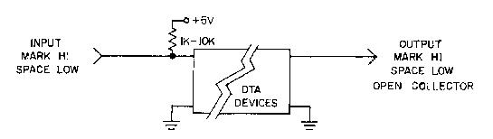
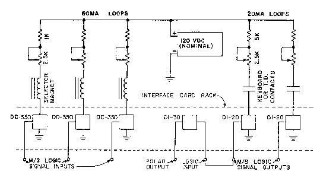
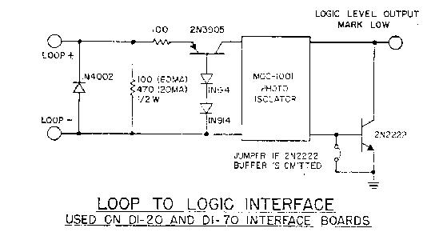
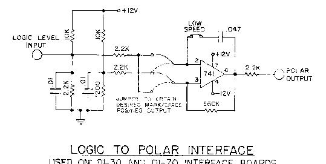
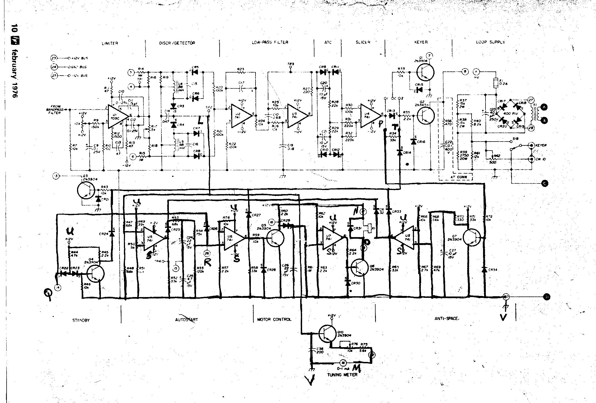

NOTE: The following description was taken from a memo dated 1976. It is highly unlikely that product support is still available today, but the information is provided as a technical guide to it's design..
DATA TECHNOLOGY ASSOCIATES, INC.
P. 0. BOX 431912
MIAMI, FLORIDA 33143
INTRODUCTION
We have had so many inquiries about our DT-600 and DT-500
Demodulators and future products that we could not possibly
answer each letter with a personal reply. For this reason we have
assembled these pages to try to answer your questions and perhaps
a few you forgot to ask about products now available, future
products, parts kits, system engineering and many more.
We have been both pleased and encouraged by your comments about the quality of our recent DT-600 package. We will strive for the same high standards in our future products. In all these efforts, the primary objective will be a quality product at a reasonable price.
The D-LINE data communications concepts and hardware have been thoroughly tested during the past four years of development. Ours is a new philosophy, unlike that found in most equipment now available on the amateur market. These concepts are discussed in more detail in the attached "System Engineering Notes #1".
You the customer are the key to the success or failure of this new approach. We fully expect that there will not be enough interest in some devices to enable us to make them available. Your comments and interest play a big part in our decision on what to make available. We are far beyond the DT-600 and DT-500 in our development efforts. The SELCOM, AFSK oscillators, UART-based devices, selector magnet drivers, interface circuits (loop-to-logic, logic-to-polar, polar-to-logic, logic-to-loop), baud rate synthesizers, multiplexers, demultiplexers, station control devices, message and time generation circuits, and many others have already been developed. Undergoing final testing at present are a simultaneous, bi-directional, Baudot- ASCII translator and a 1800 BPS cassette modem system. We will work our way up to and past these units to microprocessor control and video display systems, each with the same professional design, construction and documentation. This is true IF, on a step-by-step basis, you continue to show interest in having such devices available.
Unlike the DT-600 and DT-500 Demodulators, many modules do not necessarily have such predictable popularity. The artwork and circuit board production facilities utilized by DTA, and the subject already of inquiries from other companies, are among the finest in the country. Computer control of the photographic, drilling and cutting processes insures a circuit board whose quality and uniformity are unequaled on the amateur market. You have seen a sample of this quality in the DT-600 boards. For example, holes are drilled at a rate of 2160 holes per minute. A considerable expense is realized to set up to run boards of this quality and many must be produced in each production run to make it worthwhile.
Release of a new product is then a three-step process: (1) the design must be completed and thoroughly tested. (2) the decision must be made as to whether there is sufficient interest to market the device. (3) the circuit boards are manufactured and are marketed with complete data packages. The second step is an important one and the one in which you will play an important part. From time to time we will send you a description of a new device, complete with its usefulness and relationship to previous devices introduced. At that time we will solicit your reaction to this new product. On the basis of the collective response we will decide whether there is sufficient interest or not.
Quantity purchases of parts for the DT-600 and DT-500 Demodulators are now being made. The potentiometers are available now as outlined on the attached sheet of "Products Now Available". We are placing the emphasis on the "hard to get" items first. The capacitors for both boards are the next items on the priority list. Each person placing an order with DTA will be notified as additional parts and kits become available.
WHAT ARE POT
CORES ?
Many of you receiving our DT-600 data package have asked this
question. Basically pot cores are tuneable inductors which have
ferrite cores as do toroids, but which have been designed in such
a way that they are tuneable with a simple tuning tool. Pot cores
are available with the same 22 MHY and 88 MHY inductance ratings
that the toroids we are more familiar with possess, but with
significantly higher "Q" ratings. A definite
disadvantage of the pot core is its expense, and care must be
taken when tuning as the cores are somewhat fragile. The big
advantages of course are the higher Q which results in an
improvement in the filter bandpass characteristics and the
ability to tune them which greatly simplifies the tuning
process. A prototype DT-600 is now under test with pot cores to
evaluate their performance. We have not yet made up our minds
whether we will take the position that pot cores are worth the
added expense ($5 - $6 each in small quantities), but it appears
that if we choose the kind of capacitor to be used with care a
fairly significant improvement in the filter characteristic will
result which should improve the performance of the unit. Also,
months or years later the unit can be peaked with a tuning tool
thereby insuring accurately tuned filters and optimum
performance. We think this would be especially helpful for the
discriminator filters, although the bandpass filter seems to be
the biggest problem when we start the process of tuning by
capacitor substitution and toroid pruning.
CABINETS
Although we discuss cabinets somewhat in the system engineering
notes, a few additional words are in order. Cabinets and power
supplies constitute a very large percentage of the cost of the
equipment you purchase. It is our philosophy that these should be
a "one time" cost and not be repeated each time a new
device is added or a new terminal unit is introduced. The concept
of "central" power supplies is discussed in the system
engineering notes. With this cabinet and power supply philosophy,
new devices can be added to your system by simply adding the
plug-in board and adding a few wires to the sockets. Interfaces
with existing devices will be no problem because of the
input/output standards to which these devices have been
developed.
DT-600 RTTY DEMODULATOR P.C. BOARD
This double-sided 4.5 by 6.5 inch GlO printed circuit board with
plated through holes and solder plating, is one of the finest
quality P.C. board ever offered on the amateur market. The board
is precision machined for use with a standard 22-pin edge
connector socket. The Data Package contains a 11 by 17 inch
fold-out schematic diagram, half-toned parts layout drawing, and
29 other pages on theory of operation, construction hints, tuning
procedures, parts list and other useful information.
DT-500 RTTY DEMODULATOR P.C. BOARD
The DT-500 board is a double-sided board made to the same
rigorous specifications as our DT-600 boards. This board is
designed for use with a standard 22-pin edge connector as are all
D-LINE devices. The data package is similar to that provided with
the DT-600 as described above.
DD-350 SELECTOR MAGNET DRIVER/MOTOR CONTROL BOARD
The selector magnet driver (SMD) portion of this circuit will
take a logic level data (teletype) signal and key a 20 ma. or 60
ma. loop. When the signal line has been idle for a chosen period
of time, the motor will be turned off. A few seconds later the
high-current selector magnet circuit will be turned off. As a
result, the teletype machine's motor slows to a stop before its
loop is turned off thereby decreasing the noise and preventing
the printer from resting in the middle of a printing cycle. This
circuit turns the motor and loop on when a mark-to-space
transition is received on the logic signal line. The delay before
shut-down is adjustable from a few seconds to several minutes;
normally, this delay is set for approximately 30 seconds. A large
station might use one of these circuits for each teletype
selector magnet, thus allowing signals interconnecting the
various equipment to be logic level switched. Two circuits are
present on each DD-350 board.
DI-70 LOOP-TO-LOGIC-TO-POLAR INTERFACE BOARD
Incorporating four DI-20 Loop-to-Logic and three DI-30
Logic-to-Polar interface circuits on a single-sided card, the
DI-70 is designed to meet a number of interface requirements.
Interface between a 20 ma. or 60 ma. loop and the SELCOM, UART,
AK-l or other logic device (Loop- to-Logic); between the DT-600,
DT-500, or other logic keying device and polar keyed devices like
the XT/4, and UT-4 (Logic-to-Polar or Loop-to-Polar) are but a
few examples of the usefulness of the DI-70. Several of these
applications are shown in detail in the data package provided
with the board.
POWER SUPPLY STANDARDS
U-LINE equipment are designed in accordance with the following
power supply standards:
Where on-board or near board 3-terminal regulators are to be used, power supplies should provide the following voltages to the regulators:
INPUT/OUTPUT (I/O) STANDARDS (TTL Logic
Compatible)

* This MARK HI standard is not always possible (practical).
The Data outputs of some devices like the DT-600 and DT-500 are
MARK LOW. If convenient, both MARK HI and MARK LOW outputs can be
provided.
** It is desirable to provide inputs compatible with either
MARK HI or MARK LOW signals whenever possible.
WHY THESE
STANDARDS ?
There are lots of answers to this question and we will not
attempt to give a complete discourse on them here except to say
that a lot of thought went into their definition. Simply put,
these standards provide not only the ability to use enclosures
which permit a large number of equipment to be operated from a
common set of power supplies thus saving significantly on
expensive power supply and cabinet components, they leave us with
complete freedom to connect the inputs and outputs of the various
devices together in any way we want. We can have simple switch
controls, TTL logic controls and switching, microprocessor
control, or full minicomputer control.
Consider a simple arrangement where we have the data outputs from a keyboard, transmitter distributor (T.D.), message generator, and perhaps a time clock set up in accordance with these standards; i.e., open-collector outputs, MARK HI. By tying the outputs together (wired-OR) as is possible with OPEN-COLLECTOR TTL logic and transistor circuits (but NOT possible with non-open collector TTL packages), we can key say an AFSK oscillator with any of these devices. We can then concentrate our control system to regulate which of the devices is keyed at any one time rather than which one is connected. If we have a large system, we can add the second dimension of sharing a single message generator among several AFSK oscillators or other keying device rather than having a separate generator for each one. We can do this with the versatility provided with TTL logic packages much more simply than would be possible with current 1oops or polar (ELA RS-232, Mil Std 188) signals.
With these standards, you can add features such as UART regeneration or UART/FIFO buffering to a basic station without having to include all of the extra logic components/op amps and without kluging your demodulator as is the case with many existing equipment.
Using logic interfaces we add a new dimension which permits a great deal more flexibility. System changes now, instead of involving kluges, simply require the changing of a few wires here and there. We can extend this basic technique to any number of devices and almost any kind of switching and control system. Obviously, the more modules we have and the more flexible we are, the more complicated the control system will be. With a small number of modules, normal switches and minimal logic control are perfectly adequate. As we add modules we need to use a more complex combination of switches and some MSI logic (Data Selectors, Multiplexers, etc.). The next step is microprocessor control, an application for which these new devices are ideal. In a few months when the F.C.C. allows data communications forms such as ASCII and computer-to-computer communications, we can then implement a system with special control and switching features, automatic message formatting and block data exchange with error detection and correction, and similar features.
In large installations, there is a packaging philosophy that goes along with these standards. Two enclosures are built to accept plug-in circuit cards. The first of these contains all of the low-level devices (no voltage higher than 28 VDC). These include demodulators, AFSK oscillators, UART/FIFO, SELCOM, etc. In other words, the demodulators, AFSK oscillators, and all logic devices. In the other rack we put our interface cards to/from high-level devices like printers and reperfs. We also place all motor control circuitry in this enclosure and any RS-232 interfaces necessary.
In these versatile switching schemes where we have complete flexibility to connect signals from various outputs to various inputs, we can quickly see that our switching requirements have doubled in many cases by the requirement to switch both the data signal line and the motor control. It was to eliminate this problem and to provide a couple of other interesting capabilities that the DD-350 Selector Magnet Driver (514D)/Motor Control Circuit was developed. (See Ham Radio March 1976).
Besides the natural application for the DD-350, another is evident. If we eliminate the loop keying circuitry (omit those parts from the board) and just use the motor control circuitry, we can tie the motor control output to the transmitter key line and use it to turn the transmitter on and off. The turn-off delay would be shortened of course. In this manner, any time there was MARK/SPACE keying from say a keyboard or T.D. the transmitter would stay keyed, dropping off when the keying stopped. This is a modern version of the old "KOX" - Keyboard Operated Relay system.
By placing our high level interface circuitry in a separate enclosure, we gain several very important advantages. First, we can use a single, heavier duty power supply to power all loops instead of having to pay for many smaller transformers. Many Teletype Corporation 300 ma. and 500 ma.- power supplies are ideal for this purpose. Secondly, we eliminate the high level switching circuitry from the enclosure containing our logic devices and from the long wires from these to the printing equipment. Even more importantly, the motor control circuitry can be placed closer to the machines as start-up transients can have a serious derogatory effect on logic devices. Several users of this system have gone a step further and replaced this second card rack with selector magnet drivers like the DD-350 or DI-5O along with motor control relays right in the printer cabinet. This has some definite advantages, but you also lose some versatility gained by co-locating these driver circuits in one area, accessible by a common bussing system, and powered by common power supplies. This is again an example of the versatility of the D-LINE concept as it permits you to choose the configuration that appeals to you most.
To give you a closer look at what this high level interface circuitry might look like, and to introduce you to another D-LINE interface circuit, we have provided two illustrations on the next page. The DD-350 SMD/Motor Control circuits are mounted two to a card, while the DI-20 Loop-to-Logic interface circuits are mounted four to a card. The DI-70 Loop-to-Logic-to-Polar card consists of a DI-20 card with three DI-30 Logic-to-Polar circuits mounted thereon, thereby providing a very useful interface combination.
ENCLOSURES
We at Data Technology Associates are presently examining several
enclosures and parts of enclosures in an effort to make available
such a unit. Front loading card racks are relatively inexpensive
for those of you who wish to press forward and place various
modules in operation. Vector, Vero and several others make
suitable open- frame card racks which are available through most
large electronic dealerships. This basic type of enclosure
probably does not come with a front panel or an RFI proof
enclosure but with care and a little ingenuity they can be made
to do the job. Front loading with a swing down front panel is
very desirable as this permits easy access to the enclosed
circuit boards, especially when an extender card is used.
SUMMARY
With these discussions we have probably raised more questions
than we have answered. During the next few months we will have to
indicate various parts of the D-LINE system philosophy through
schematics and descriptions until we have had time to make those
items available that you the user express an interest in. The
beauty of this system is its versatility. At first glance it will
appear that there are a lot of options and pieces which we
normally translate to high cost. After you have been exposed to
many of the pieces and some examples of how they can be used, you
will begin to decide what you want to achieve. Then, take the
time to add up the cost (which will be spent in steps instead of
one big bang) and compare that with other data communications
systems on the market. Compare both the cost and the features.
Compare the quality of the design, fabrication and documentation.
See which you understand the best and are most qualified to
troubleshoot and maintain. Determine which is easiest to
reconfigure as you are able to take advantage of new technologies
and new ideas. We think this examination will result in high
marks for the D-LINE in:
| DESIGN | PERFORMANCE | WORKMANSHIP |
| VERSATILITY | MAINTAINABILITY | VALUE |
| UNDERSTANDABILITY |
This revolutionary new approach to meeting your needs and giving you more for your money obviously depends upon acceptance to be successful. We ask simply that you keep an open mind, follow us step-by-step as we go along. Read carefully the articles and documentation accompanying each device that you choose to include in your plan of things.

LOOP CONNECTIONS

LOOP TO LOGIC INTERFACE
used on DI-20 and DI-70 interface boards

LOGIC TO POLAR INTERFACE
Used on DI-30 and DI-70 interface boards

DT-600 Schematic
NOTE: Drawing reduced in size to fit screen, use right mouse button to save to disk and print.